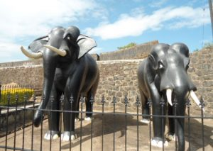
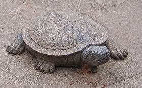

Travel is Life.Couldn't agree more?
we not just discuss travell,
We make it happens
Madikeri Fort is a historical landmark and a prominent tourist place in Kodagu. The fort is situated in the center of the Madikeri town, still preserving the remnants of a bygone era within its walls.
The Madikeri Fort was constructed in the later years of the 17th century by Muddu Raja, the then king of Coorg. Since then the fort has seen many changes. However, this imposing structure has stood the test of time and has become a standing witness of Coorg’s history.
Today the fort premises house the Kodagu Deputy Commissioner’s Office.
The long history of the Madikeri Fort can be traced back to the 17th century when Muddu Raja had made Madikeri the capital of Coorg. The fort was built as a mud structure. The king had also constructed a mud palace inside the fort premises.
History
However, when Tipu Sultan captured the fort, he ordered to reconstruct the structure in granite and named the site Jaffarabad. The rule of Tipu Sultan over the fort was cut short by Dodda Virarajendra who captured the fort in 1790. The fort faced further changes and renovations
during the period 1812 – 1814 when it came under the rule of Linga Rajendra II. In 1834 the fort was captured by the British rulers of India. These British rulers went on to make further additions and modifications to the fort and the structures within its solid walls.
 
Architecture
The Madikeri Fort showcases beautiful architectural designs. Two stone replicas of elephants stand in the north-east corner and draw the attention of the visitors upon their entrance to the fort. The palace structure is a huge and spacious one. This two storied structure is 110 feet in length.
The structure was renovated twice by the British rulers. In 1933 they added a grand clock tower to the fort. They also built a portico to park the commissioner’s car.
The fort also houses a temple, church, prison, library and a museum. The Kote Maha Ganapathi temple is considered to be the oldest part of the fort and the most visited one too. The church inside the fort signifies the dominance of the British in this region, it was built in gothic style with stained glass windows.
The palace also has a sculpture of a tortoise with king’s initials engraved on it. The fort has a small square mantapa built of stone and enriched by beautiful surroundings.
It stands on a high level ground and provides a splendid view of the surrounding areas to the west. This mantapa is believed to have been a favourite spot for relaxation of the erstwhile kings of the fort.